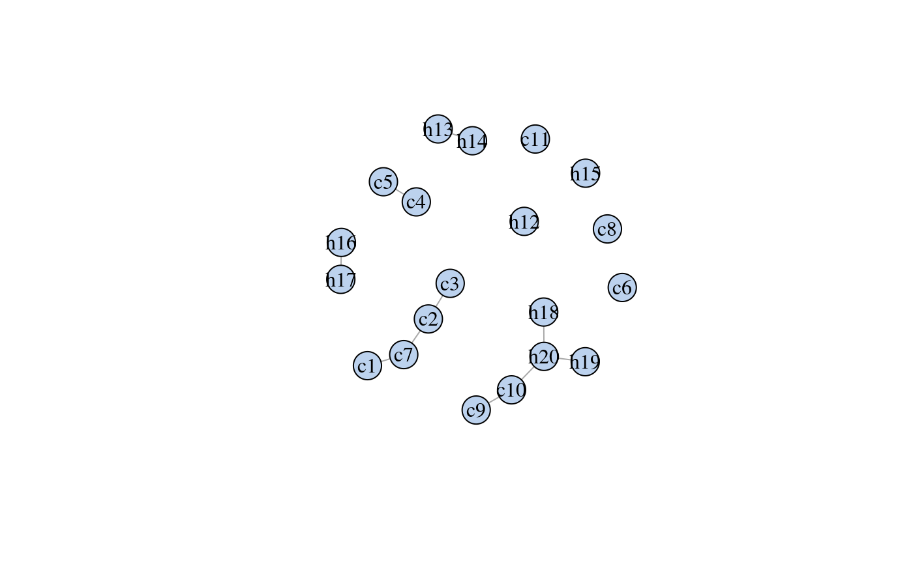
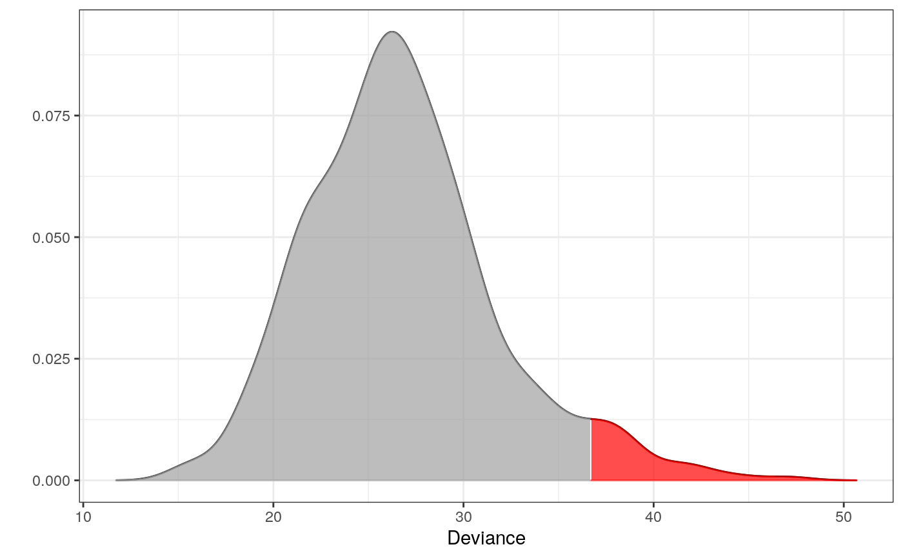

Detecting outliers within a dataset or test if a new (novel) observation is an outlier.
fit_outlier( A, adj, z = NULL, alpha = 0.05, nsim = 10000, ncores = 1, validate = TRUE )
| A | Character matrix or data.frame. All values must be limited to a single character. |
|---|---|
| adj | Adjacency list or |
| z | Named vector (same names as |
| alpha | Significance level |
| nsim | Number of simulations |
| ncores | Number of cores to use in parallelization |
| validate | Logical. If true, it checks if |
A outlier_model object with either novelty or outlier
as child classes. These are used for different purposes. See the details
If the goal is to detect outliers within A set z to NULL;
this procedure is most often just referred to as outlier detection. Once fit_outlier
has been called in this situation, one can exploit the outliers function to get the
indicies for which observations in A that are outliers. See the examples.
On the other hand, if the goal is test if the new unseen observation z is an outlier
inA, then supply a named vector to z.
All values must be limited to a single character representation; if not, the function will
internally convert to one such representation. The reason for this, is a speedup in runtime
performance. One can also use the exported function to_single_chars on A in
advance and set validate to FALSE.
The adj object is most typically found using fit_graph from the ess
package. But the user can supply an adjacency list, just a named list, of their own
choice if needed.
library(dplyr) library(ess) # For the fit_graph function set.seed(7) # For reproducibility # Psoriasis patients d <- derma %>% filter(ES == "psoriasis") %>% select(1:20) %>% # only a subset of data is used to exemplify as_tibble() # Fitting the interaction graph # see package ess for details g <- fit_graph(d, trace = FALSE) plot(g)# ----------------------------------------------------------- # EXAMPLE 1 # Testing which observations within d are outliers # ----------------------------------------------------------- # Only 500 simulations is used here to exeplify # The default number of simulations is 10,000 m1 <- fit_outlier(d, g, nsim = 500) print(m1)#> #> -------------------------------- #> Simulations: 500 #> Variables: 20 #> Observations: 111 #> Estimated mean: 26.3 #> Estimated variance: 23.7 #> -------------------------------- #> Critical value: 35.35006 #> Alpha: 0.05 #> <outlier, outlier_model, list> #> --------------------------------#> # A tibble: 12 x 20 #> c1 c2 c3 c4 c5 c6 c7 c8 c9 c10 c11 h12 h13 #> <chr> <chr> <chr> <chr> <chr> <chr> <chr> <chr> <chr> <chr> <chr> <chr> <chr> #> 1 2 1 2 2 2 0 0 0 0 0 0 0 1 #> 2 2 2 2 3 3 0 0 0 0 2 0 0 1 #> 3 3 3 2 2 1 0 0 0 0 1 0 0 2 #> 4 1 1 1 1 1 0 0 0 1 1 0 0 0 #> 5 1 1 1 1 1 0 0 0 2 2 0 0 0 #> 6 1 1 1 1 1 0 1 0 2 3 0 0 0 #> 7 2 3 1 2 1 0 0 0 0 0 0 0 0 #> 8 3 3 2 2 0 0 0 0 2 0 0 0 0 #> 9 1 3 1 0 0 0 0 0 0 0 0 0 0 #> 10 3 2 3 0 1 0 0 0 1 2 0 0 0 #> 11 3 2 3 2 0 0 0 0 0 2 1 0 0 #> 12 2 2 1 1 0 0 0 0 0 2 1 0 0 #> # … with 7 more variables: h14 <chr>, h15 <chr>, h16 <chr>, h17 <chr>, #> # h18 <chr>, h19 <chr>, h20 <chr># Notice that m1 is of class 'outlier'. This means, that the procedure has tested which # observations _within_ the data are outliers. This method is most often just referred to # as outlier detection. The following plot is the distribution of the test statistic. Think # of a simple t-test, where the distribution of the test statistic is a t-distribution. # In order to conclude on the hypothesis, one finds the critical value and verify if the # test statistic is greater or less than this. # Retrieving the test statistic for individual observations x1 <- douts[1, ] %>% unlist() x2 <- d[1, ] %>% unlist() dev1 <- deviance(m1, x1) # falls within the critical region in the plot (the red area) dev2 <- deviance(m1, x2) # falls within the acceptable region in the plot dev1#> [1] 37.71912dev2#> [1] 34.03639#> [1] 0.01#> [1] 0.076# ----------------------------------------------------------- # EXAMPLE 2 # Testing if a new observation is an outlier # ----------------------------------------------------------- # An observation from class "chronic dermatitis" z <- derma %>% filter(ES == "chronic dermatitis") %>% select(1:20) %>% slice(1) %>% unlist() # Test if z is an outlier in class "psoriasis" # Only 500 simulations is used here to exeplify # The default number of simulations is 10,000 m2 <- fit_outlier(d, g, z, nsim = 500) print(m2)#> #> -------------------------------- #> Simulations: 500 #> Variables: 20 #> Observations: 112 #> Estimated mean: 26.79 #> Estimated variance: 25.16 #> -------------------------------- #> Critical value: 36.70118 #> Deviance: 55.14169 #> P-value: 0 #> Alpha: 0.05 #> <novelty, outlier_model, list> #> --------------------------------# Notice that m2 is of class 'novelty'. The term novelty detection # is sometimes used in the litterature when the goal is to verify # if a new unseen observation is an outlier in a homogen dataset. # Retrieving the test statistic and pvalue for z dz <- deviance(m2, z) pval(m2, dz)#> [1] 0